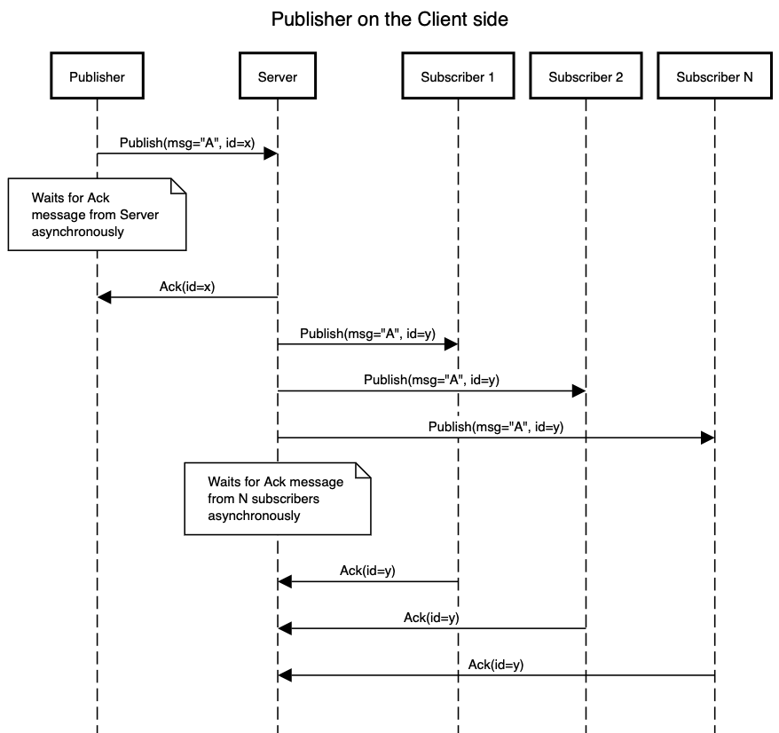

PubSub
A simple PubSub support is added in 0.8.0. A simple example can be found here.
A publisher can be created on the server side or the client side using the publisher::<T: Topic>() method, and a subscriber can be created using the subscriber::<T: Topic>(cap: usize) method. They both take one type parameter T which must implement the toy_rpc::pubsub::Topic trait. You can use the provided derive macro #[derive(toy_rpc::macros::Topic)] to define a struct as the pubsub message or by manually implementing the toy_rpc::pubsub::Topic trait on a type.
use toy_rpc::macros::Topic;
use serde::{Serializer, Deserialize};
#[derive(Topic, Serialize, Deserialize)]
pub struct Count(pub u32);
The message item type and topic name can also be customized using attribute #[topic]. For example
#[derive(Serialize, Deserialize, Topic)
#[topic(rename="C")] // This will only change topic name to "C", and the message item type is still `Count`
pub struct Count(u32);
#[derive(Topic)
#[topic(item = "u32")] // This will only change the message item type
pub struct Count { }
#[derive(Topic)
#[topic(rename = "C", item = "u32")] // Or customize both topic name and item type
pub struct Count { }
Or manually implement the Topic trait
#[derive(Serialize, Deserialize)]
pub struct Count(pub u32);
impl toy_rpc::pubsub::Topic for Count {
type Item = Count; // The Item type must implement `Serialize` and `Deserialize`
// A String identifier for the topic. The user must ensure it is unique
fn topic() -> String {
"Count"
}
}
A publisher can be created by specifying the topic in the type parameter.
let publisher = client.publisher::<Count>(); // on client side
// let publisher = server.publisher::<Count>(); // on server side
The Publisher implements the futures::Sink<T> trait where T is the type parameter representing the topic. In order to publish message to the topic, the futures::SinkExt trait must be imported.
use futures::SinkExt;
publisher.send(Count(7)).await.unwrap();
A subscriber can be created by specifying the topic in the type parameter and the capacity of its local buffer. Here we will create a subscriber on the client side listening to messages on the topic Count with a local capacity of 10.
let subscriber = client.subscirber::<Count>(10).unwrap(); // on the client side
// let subscriber = server.subscriber::<Count>(10).unwrap(); // on the server side (except for `actix-web`)
The Subscriber implements the futures::Stream<Item = Result<T, toy_rpc::Error>> trait where T is the type parameter representing the topic. In order to process incoming messages, the futures::StreamExt trait must be imported.
use futures::StreamExt;
if let Some(result) = subscriber.next().await {
let item = result.unwrap(); // There could be errors recving incoming messages
// do something with the item
}
Example
Ack for Publish message delivery
As of version 0.8.0-beta.0, Ack is added in the cases where explicit Ack is needed. Ack only applies to acknowledge receiving of Publish message and does NOT apply to any RPC requests/responses. There are three different AckMode
AckModeNone, which is the default mode for both theServerandClient. This mode is available on both theServerand theClientUnder this mode, noAckmessage will be required by the publisher or be sent by the subscriber.AckModeAuto. This mode is available on both theServerandClient. Under this mode, both the server and the client will automatically reply with anAckto anyPublishmessage they receive.AckModeManual. This mode is only available onClient. Under this mode, the subscriber needs to manually.ack()in order to get the published item. Please note that under the manual mode, thePublisherbehaves the same as if it is under theAckModeAutomode.
The behavior of publisher/subscriber will be discussed in different senarios below.
-
Publisheron theServerwithAckModeAutoWhen a
Publisheris created on the server side, the server's pubsub handler will wait for ALLAcks from the subscribers, including that fromSubscriberon theServer, in an asynchronous manner, meaning the publisher is able to continue publishing new messages even if some subscribers have not sent backAckyet. Upon reaching the timeout, the server's pubsub handler will try to resend the same publish message (with the same sequence ID) to theSubscribers that have not send backAckmessages. The server will stop retrying after the maximum number of retries is reached. -
Publisheron theClientwithAckModeAutoorAckModeManualWhen a
Publisheris created on the client side, the client will wait for only ONEAckmessage from theServerin an asynchronous manner, meaning thePublisheris able to continue publishing new messages even if theAckmessage from theServerhas not arrived. If theAckmessage from theServerdoes not arrive before the timeout expires, the client will attempt to publish the same message (with the same message ID). The client (Publisher) will stop retrying after the maximum number of retries is reached.Once the
Publishmessage is received by theServer, the message will be assigned a new sequence ID that is tracked only by theServer. The message will then be published to all subscribers under the topic, and the server will wait for ALLAckmessages from the subscribers in an asynchronous manner, meaning the server will be able to keep handling RPC requests or PubSub messages while waiting forAckmessages to come back. If not allAckmessages are sent back to the server before the timeout expires, the server will attempt to resend the same message with the same sequence ID number to the subscribers whoseAckmessages are not received. The server will stop retrying after the maximum number of retries is reached.
-
Subscriberon theServerside withAckModeAutoPlease note that the
Serverside does NOT supportAckModdManual. Upon receiving a published message, the subscriber will automatically send back anAckmessage to the PubSub handler on the server. -
Subscriberon theClientside withAckModeAutoUpon receiving a published message, the
Clientwill automatically send back anAckmessage back to theServer. -
Subscriberon theClientside withAckModeManualInstead of receiving the usual
Result<Topic::Item, Error>from theSubscriberstream, the user will receiveResult<Delivery<Topic::Item>, Error>. In order to get the usualTopic::Item, the user will need to call.ack()method on theDeliveryobject (ie.let item = delivery.ack()), which will send back anAckmessage to theServer.
How to use AckMode
By default, all Server and Client start with AckModeNone
let server = Server::builder()
.build(); // This will create a server with `AckModeNone`
let client = Client::dial(ADDR)
.await.unwrap(); // This will create a client with `AckModeNone`
Ack can be enabled by setting the Server or Client into the corresponding mode using the corresponding builder.
let server = Server::builder() // This will start the builder with `AckModeNone`
.set_ack_mode_auto() // This will set the ServerBuilder to `AckModeAuto`
.build(); // This will build the server with `AckModeAuto`
let client = Client::builder()
.set_ack_mode_auto() // This will set the ClientBuilder to `AckModeAuto`
.dial(ADDR)
.await.unwrap(); // This will create a Client with `AckModeAuto`
let client = Client::builder() // This will start the builder with `AckModeNone`
.set_ack_mode_manual() // This will set the ClientBuilder to `AckModeManual`
.dial(ADDR)
.await.unwrap(); // This will create a Client with `AckModeManual`
The timeout and maximum number of retries for the publisher can also be configured
let server = Server::builder()
// Must enable Ack first
.set_ack_mode_auto()
// Sets how long the server will wait for Ack messages.
//
// This also affects the Publish messages sent by
// `Publisher`s from the client side
.set_publisher_retry_timeout(Duration::from_secs(5))
// Sets many times the server will retry.
//
// This also affects the Publish messages sent by
// `Publisher`s from the client side
.set_publisher_max_num_retries(3)
.build();
let client = Client::builder()
// Must set the builder into some `Ack` mode
.set_ack_mode_auto()
// Sets how long the client publisher will wait for Ack message from Server.
//
// This does ***NOT*** affect how long the server will wait for
// `Ack` from the subscribers
.set_publisher_retry_timeout(Duration::from_secs(5))
// Sets how long the client publisher will retry to send the Publish
// message to the server.
//
// This does ***NOT*** affect how many times the server will attempt to
// resend the publish message to the subscribers
.set_publisher_max_num_retries(3)
.dial(ADDR)
.await.unwrap();